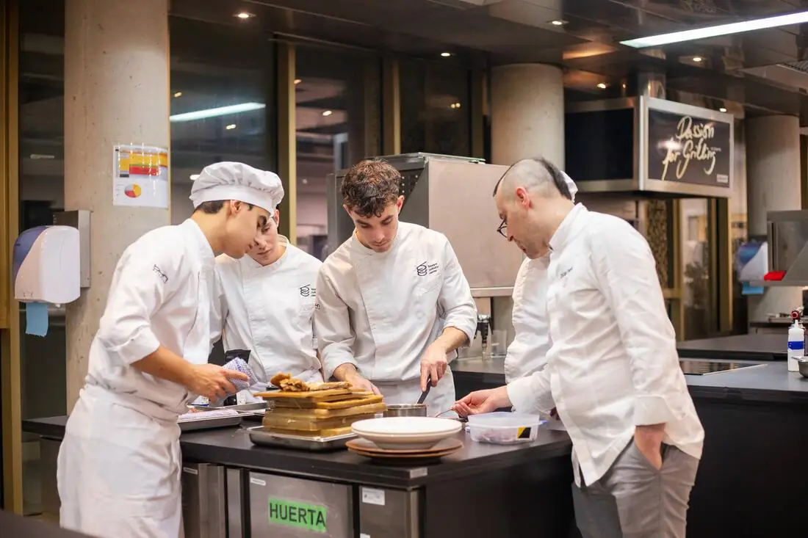
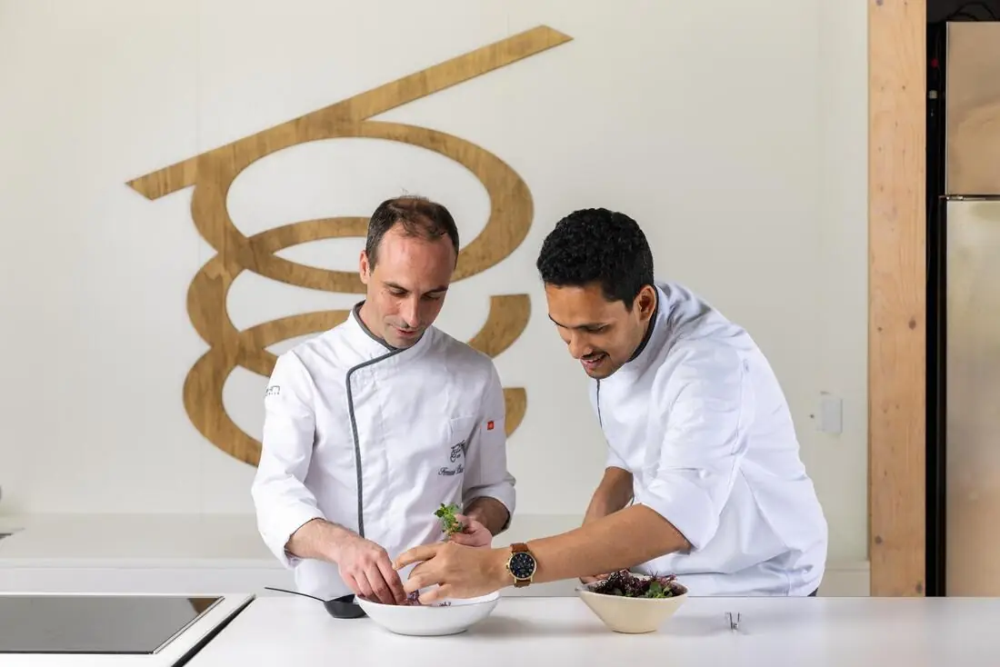
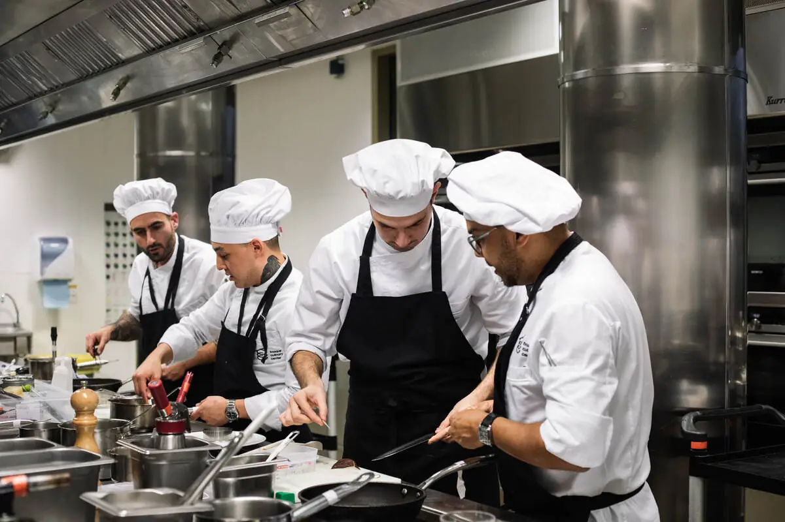
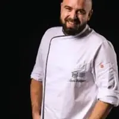

Next editionOctober 2027
A global, future-focused culinary programme to develop chefs as creative leaders — building relevant, sustainable and scalable gastronomic concepts.
Request Information
Receive the full program brochure, fees, and a personal call with our admissions team.
Request information →Ready to apply? Start your online application
€150 application fee, fully refundable if not admitted.
Leave your details and our admissions team will send you everything you need about the October 2027 edition.
Ready to apply? Start your online application
Thank you.
We have received your request. Our admissions team will send you the programme information for the October 2027 edition. Please check your inbox, including the spam folder.
Ready to take the next step? Start your online application
Seats per cohort
ECTS Credits
Months on campus
Months of internship
Course final menu
This master is not about replicating what already exists — it is about developing the judgement, technique and creative clarity to build what comes next.
Develop structured culinary creativity based on product knowledge, technical mastery and contextual understanding. Learn to create dishes with meaning, coherence and a strong professional identity.
Work with cutting-edge techniques, new equipment and contemporary trends as tools to design dishes with purpose — always aligned with a coherent gastronomic concept.
Practical workshops. Learning Journeys to explore ingredients at origin. A 15–18 course Final Master's Project. A real dining event for real clients. Professional placements in leading restaurants.
Masterclasses with world-renowned chefs. Continuous interaction with an environment fully immersed in gastronomy. Access to an international culinary network from day one.
By the end of the Master's, you will have stronger professional judgement — capable of understanding ingredients, applying technique with intention and adding creative value across diverse culinary contexts.
With experience in fine dining or contemporary restaurants — who wish to refine technique, broaden product knowledge and develop their own creative judgement.
With vocational, university or non-formal training at leading gastronomic institutions, seeking to consolidate their profile towards greater technical and creative mastery.
Chefs looking to launch their own projects, lead creative processes or join high-performing teams — who need to strengthen technical foundation and professional vision.
A university degree is not required. The programme is open to professionals with relevant experience in the culinary sector. We recommend at least three years of experience in a professional kitchen.
After completing the Master's, you will be prepared to grow within contemporary gastronomy — contributing greater professional judgement, creative capacity and value across different culinary settings.
Fine dining & high-level culinary projects
As a specialised chef or chef de partie, where creativity, rigor and a distinctive voice are valued.
Culinary creativity & innovation
Contributing to the development of dishes, menus and gastronomic concepts in R&D contexts.
Gastronomic entrepreneurship
Launching your own projects with a solid foundation in technique, product knowledge and creativity.
Consultancy & culinary education
Sharing technical and methodological expertise with restaurants, brands and institutions.


The curriculum unfolds progressively — from culinary context and advanced technique to product mastery, creative innovation, a final master's project, and a three-month professional internship.

Location
GOe Campus
San Sebastián, Spain
Degree
Professional Master
Mondragon University
Language
English
International cohort
Cohort
18 students max
October 2027
History of cuisine · Sensory analysis · Culinary chemistry · Food quality, safety & hygiene · Sustainability · Customer experience & Front of House · Personal skills · Digitalisation in restaurants · Restaurant management · Nutrition · Food & beverage pairing · Operational efficiency, cost control and workflow organisation.
Dehydration & smoking/curing · Moist-heat, fat-based and acid-based cooking · Fermentation: lactic, alcoholic, koji, penicillium, kombucha · Vacuum cooking (sous-vide) · Gas & siphon techniques · Thickeners, gelling agents, emulsifiers & aerating agents · Nixtamalisation · Liquid nitrogen & dry ice · Functional ingredients (cocoa butter, inulin, maltodextrin, methylcellulose) · Modern R&D kitchen equipment · Pastry & dessert techniques.
Vegetables & plant-based: seasonal cooking, horticultural techniques, alternative proteins · Animal-based: eggs, dairy, meat, game & offal · Grains, seeds & cereals · Meat: Iberian pork, game, offal, poultry · Spices · Seafood: fish, shellfish, crustaceans, molluscs, sea vegetables (seaweed, halophytes) · Bread.
Innovation in dishes · Menu concepts & proposals · New trends · Challenges in gastronomic perception · Creative processes in the restaurant · Creative methods for dish design & architecture · Creativity tools for recipe development · Artificial Intelligence applied to dish development and operational efficiency.
Each team of 4–5 students develops an experimental tasting menu of 15–18 courses — from conceptual design to technical execution. Culminates in a dinner service judged by industry professionals, guest chefs and BCC faculty, assessing the technical result, creative proposal and overall gastronomic experience.
Internships in national and international leading restaurants and culinary organisations. The programme coordinator provides personalised guidance. Three months of full-time dedication (April–July 2028), with the possibility of extension. Senior profiles may validate prior professional experience.

Programme Coordinator
International career spanning Michelin-starred restaurants, luxury hotels and large-scale gastronomic operations. Trained in renowned kitchens including Echaurren, Tickets and 41° by Albert Adrià. Led kitchens at The Peninsula Beijing, Aqua Group Hong Kong and La Serre Dubai. Currently Senior Expert in Culinary Innovation & Global Professional Trainer at Basque Culinary Center.
Core Faculty
Chef & Researcher
Chef & Researcher, BCC.
International Fine Dining
Chef & Executive Chef, International Fine Dining Projects.
Pastry & Sweet Cuisine
Pastry Chef & Coordinator, Master's in Restaurant Pastry, BCC.
Bread & Cereals
Agronomical Engineer & Breadmaking Technology Specialist, BCC.
Culinary Chemistry
Professor of Culinary Chemistry & Researcher, BCC.
Leadership & Management
Program Director & Professor of Leadership, BCC.
Sensory Analysis
Senior Researcher in Sensory Analysis & Consumer Behaviour, BCC.
Innovation & Business
Gastronomic Innovation & Business Development, BCC.
Cooking Coordinator
Chef, Lecturer & Cooking Coordinator, BCC.
Guest Chefs & Industry Experts
Masterclasses, demonstrations and dialogues offering direct exposure to global culinary excellence.
Included: BCC uniform, materials & platform access, Learning Journey, guest chef masterclasses, internship management, degree issuance, library access, Bculinary Alumni network.
Payment: €150 on application (refundable if not admitted). €4,397.50 on admission to reserve your seat. Balance in 3 instalments of €4,397.50 in October, December and February.
Register online (€150, fully refundable if not admitted) and send your CV, a motivation letter with a brief description of your gastronomic idea or project, and your academic records.
An online interview with the Master's coordinator. We assess your professional background, competencies and alignment with the programme's goals, and answer your questions.
Successful candidates receive a formal offer. A reservation fee secures your seat. Applications are reviewed on a rolling basis.
Only 18 seats per cohort.
Applications for October 2027 are now open. We review on a rolling basis — early applications are strongly encouraged.
Not ready yet? Request information
No. The Master is open to university graduates and to professionals with relevant experience in the sector. We recommend at least three years of experience in a professional kitchen.
Students from outside the EU and Schengen area need a long-term student visa for programmes longer than 90 days. Once your seat is reserved, Basque Culinary Center provides the enrolment certificate, study programme and academic calendar required for your application.
The internship runs from April to July 2028, full-time, in leading national or international restaurants and culinary organisations. We manage the placement and the coordinator guides you through the options. Senior profiles may validate prior professional experience.
Basque Culinary Center students have preferential rates at Livensa Living San Sebastián, and the Students' Office helps admitted students get in touch to share flats.
Yes. This Master is also delivered in Spanish. See the Spanish edition.
A curated selection of masters and online courses for those seeking to deepen their gastronomic, scientific and managerial expertise.
Master the science, craft and innovation behind fermented foods and beverages.
Discover program → Master · On-campusDecode flavour, perception and consumer behaviour through rigorous sensory methodology.
Discover program → Master · On-campusApply scientific research to food, cooking and the future of gastronomy.
Discover program → Online courseDesign memorable gastronomic tourism experiences with strategy and storytelling.
Discover program → Online courseLead profitable, modern restaurant operations with a comprehensive management toolkit.
Discover program →Eighteen places. One year. Donostia. If you are ready to lead the next chapter of gastronomy, we would like to meet you.